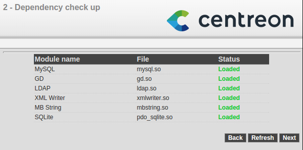
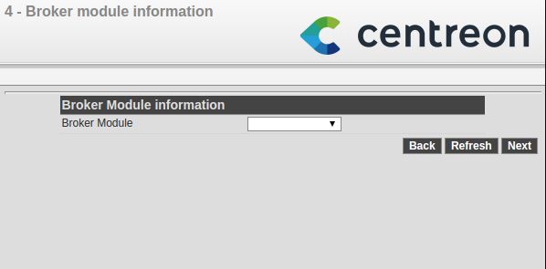
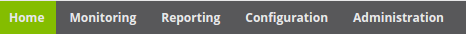

Using CES¶
Installation¶
Step 1 : Start¶
To install, start your server on the support (created from the ISO file) of the Centreon Enterprise Server. Start with the Install or upgrade an existing system option

Click on Next

Step 2 : Choice of language¶
Choose your language and click on Next.

Select the keyboard used by your system and click on Next.

Step 3 : General configuration¶
Depending on the type of storage required, choose the options necessary to obtain the partitioning that suits you best.

A warning message may appear

Choose your hostname and click on Configure network in order to modify your network card configuration.
Select the network card that you want to use and go into “IPv4 Settings” or “IPv6 Settings” tab (depending on the requirement) to configure the IP address of the interfaces. Click on Apply to save the changes.

Click on Close and Next to continue.
Select your time zone and click on Next.

Enter the desired root password, and click on Next.
Select the partitioning options that suit you best. Then validate.

Step 4 : Component selection¶
Choose the server type¶
It is possible to choose different options in answer to the question: Which server type would you like to install?:

- Central server with database : Install Centreon (web interface and database), monitoring engine and broker
- Central server without database : Install Centreon (web interface only), monitoring engine and broker
- Poller server : Install poller (monitoring engine and broker only)
- Database server : Install database server (use with Central server without database option)
In our box, we shall choose the Centreon Server with database option.
Once all these options have been selected, the installation starts.

When the installation is finished, click on Restart.

Configuration¶
Via the web interface¶
Log into web interface via : http://[SERVER_IP]/centreon. The End of installation wizard of Centreon is displayed, click on Next.

The End of installation wizard of Centreon checks the availability of the modules, click on Next.
{kind=link}
Choose the centreon-engine option.

Click on Next.

For the choice of broker, choose Centreon-broker.
{kind=link}
Click on Next.

Define the data concerning the admin user, click on Next.

By default, the ‘localhost’ server is defined and the root password is empty. If you use a remote database server, these two data entries must be changed. In our box, we only need to define a password for the user accessing the Centreon databases, i.e. ‘Centreon’, click on Next.

If the following error message appears: Add innodb_file_per_table=1 in my.cnf file under the [mysqld] section and restart MySQL Server. Perform the following operation:
- Log-on to the ‘root’ user on your server
- Modify this file
/etc/my.cnf
- Add these lines to the file
- Restart mysql service
- click on Refresh
The End of installation wizard configures the databases, click on Next.

The installation is finished, click on Finish.

You can now log in.

Start monitoring¶
To start monitoring engine :
- On web interface, go to Configuration ==> Monitoring engines
- Leave the default options and click on Export
- Uncheck Generate Configuration Files and Run monitoring engine debug (-v)
- Check Move Export Files and Restart Monitoring Engine
- Click on Export again
- Log into the ‘root’ user on your server
- Start Centreon Broker
/etc/init.d/cbd start
Monitoring is now working.
Introduction to the web interface¶
Centreon web interface is made up of several menus, each menu has a specific function:
- The Home menu enables access to the first home screen after logging in. It summarises the general status of the supervision.
- The Monitoring menu contains the status of all the supervised elements in real and delayed time via the viewing of logs and performance graphics.
- The Reporting menu serves to view, intuitively (via diagrams), the evolution of the supervision on a given period.
- The Configuration menu serves to configure all monitored objects and the supervision infrastructure.
- The Administration menu serves to configure the Centreon web interface and to view the general status of the servers.
Before going further¶
it is necessary update the CES 3.3 server. To do this:
- Log in as a ‘root’ on the central server
- Enter this command
yum -y update
Allow the update to run fully and then restart the server in case of a kernel update.
Start your configuration by clicking here<configuration_start>>.